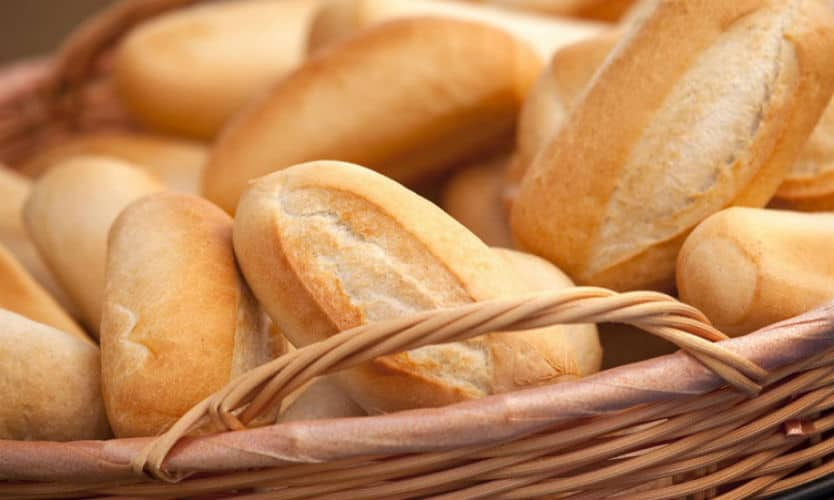
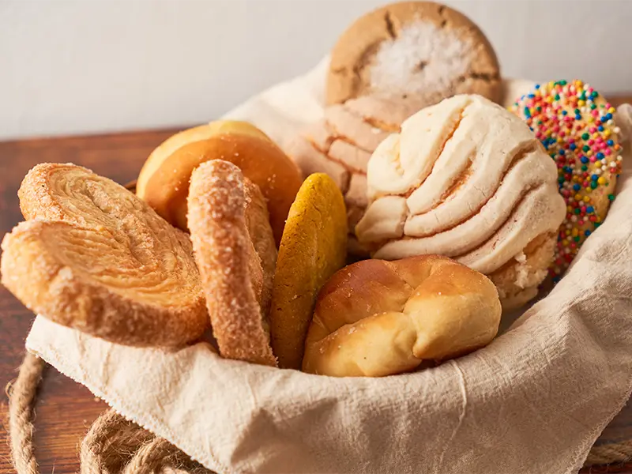

Nuestros deliciosos panes tradicionales

Pan salado
Horneado lentamente en un horno de leña, logrando una corteza crujiente y un interior tierno y bien cocido.

Pan dulce
Cuidadosamente horneado en un horno de leña, dándole una textura suave, un aroma irresistible y un sabor perfectamente equilibrado.